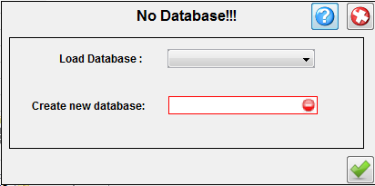

| Start Application For The First Time |
|---|
|
The first time you run the application the following panel is displayed:

You provide the database name to create (eg John_2008) and check "Populate with demo data"
to insert in the database some series / episodes.Pushing Create button the database is cretaed and it's used as the default database. Pushing Exit button will discard the panel and exit the application |